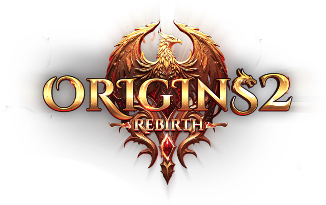
HELPER BY SOCIETY
Kostenlose Browser-Tools für Origins2 – zum Uppen, Planen und Mitspielen. Ehrenamtlich gebaut von der Gilde Society. Free browser tools for Origins2 – for upgrading, planning and playing along. Built by volunteers from the guild Society.
society-origins2.github.io/origins2-helper
Die IdeeThe idea
Eine Website, sonst nichts. Keine externe Software, kein Download, kein Eingriff in den Client.A website, nothing else. No external software, no download, nothing that touches the client.
Keine Monetarisierung, keine Werbung, keine Bezahlfunktionen. Wir bauen das in unserer Freizeit.No monetisation, no ads, no paid features. We build it in our free time.
Einfach öffnen und loslegen. Einstellungen und Preise bleiben im eigenen Browser.Just open it and go. Settings and prices stay in your own browser.
Auf Deutsch und Englisch, am PC und am Handy, mit Links zum Teilen auf Discord.In German and English, on PC and mobile, with links to share on Discord.
Unser Ziel: die ohnehin schon sehr gute Erfahrung auf Origins2 noch komfortabler machen.Our goal: make the already great experience on Origins2 even more comfortable.
ORIGINS2 HELPER by SocietyÜberblickOverview
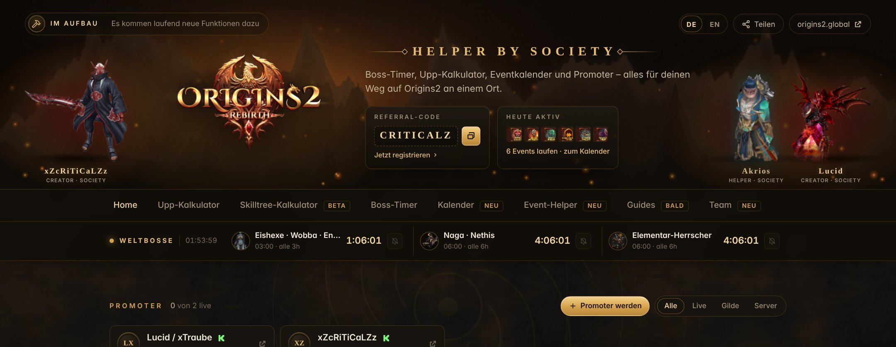
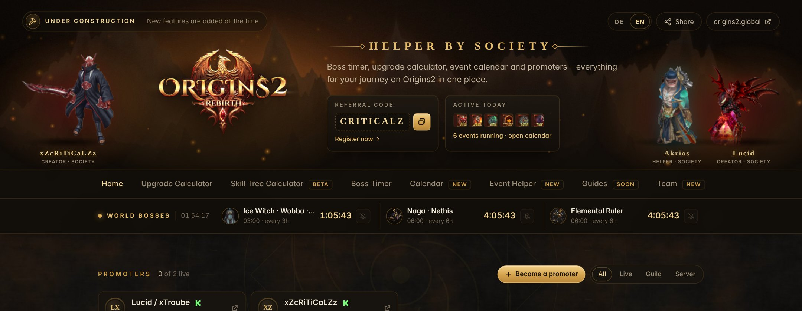
Oben immer sichtbar: die nächsten Weltbosse mit Countdown und die heute laufenden Events.Always visible at the top: the next world bosses with countdown and today's running events.
Kosten & Einkaufsliste für ganze Item-ReihenCosts & shopping list for whole item lines
Ziel wählen, alle Lieferungen sehenPick a goal, see every delivery
Live-Countdowns mit TonLive countdowns with sound
Monat, Woche, Tag – mit ErinnerungMonth, week, day – with reminders
Bester Zug, exakt berechnetBest move, calculated exactly
Schwebt über dem Spiel, per Klick auf- und zuklappbarFloats over the game, opens and collapses with a click
Werkzeug 1Tool 1
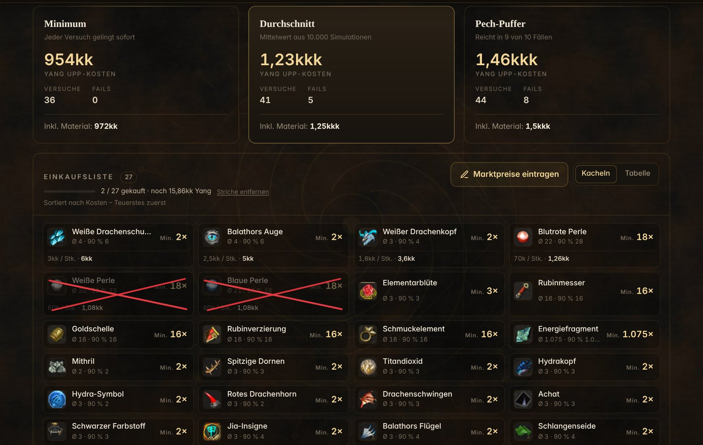
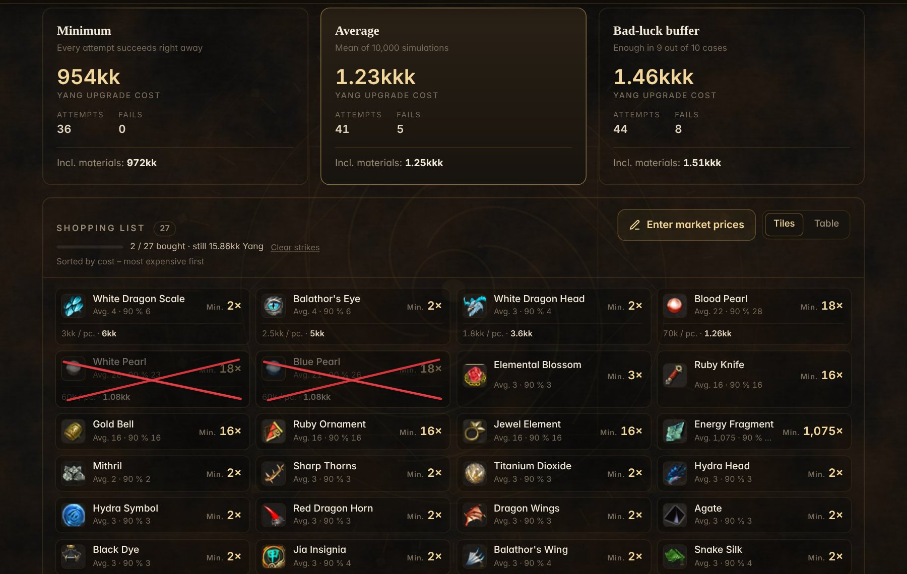
Werkzeug 2Tool 2
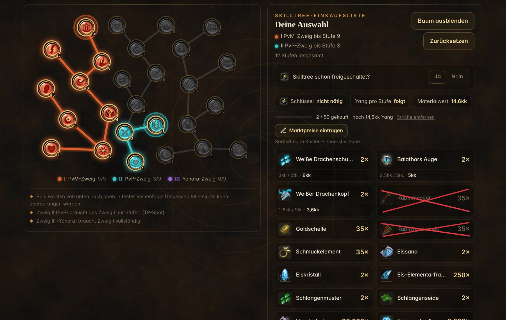
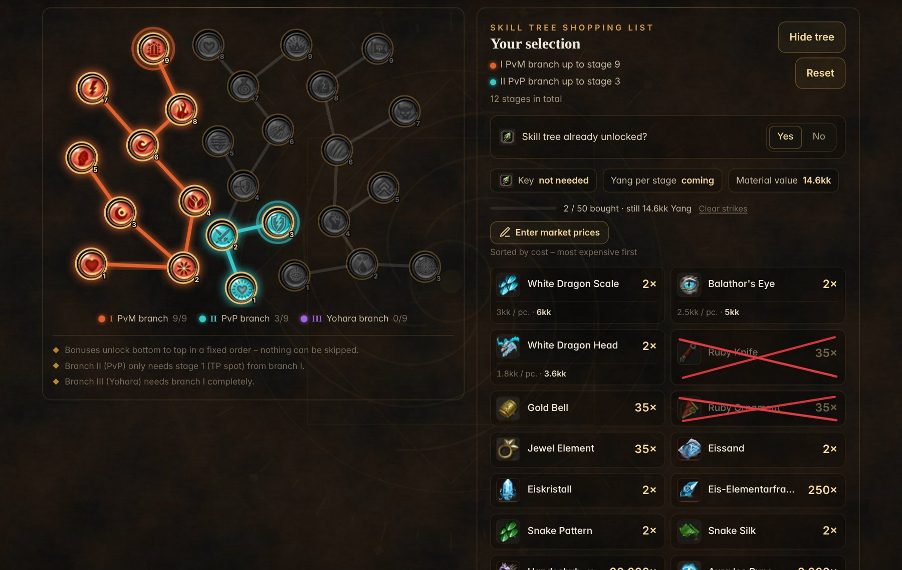
Werkzeug 3 & 4Tools 3 & 4
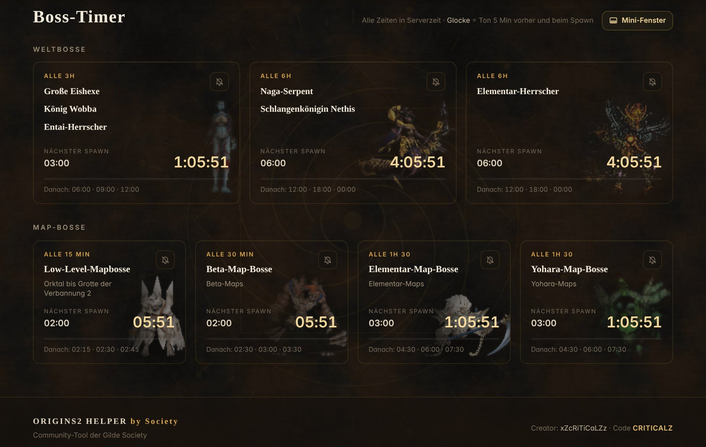
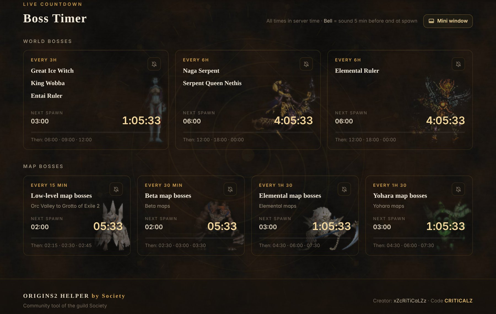
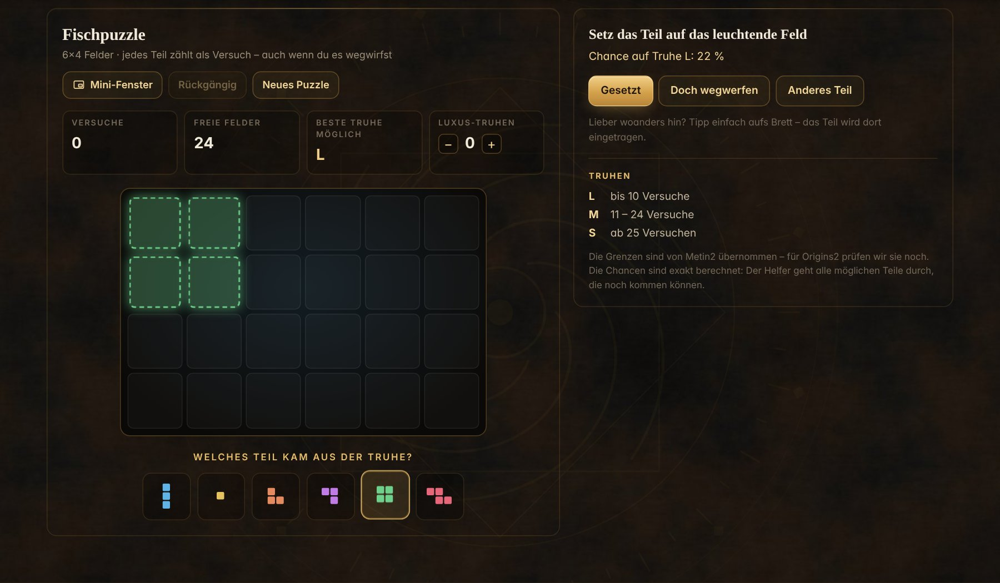
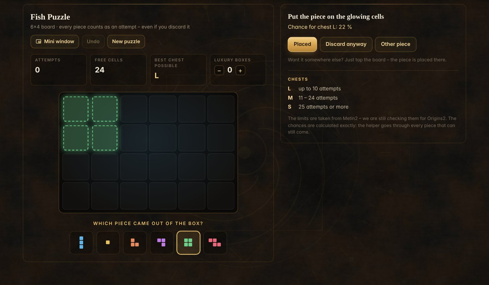
Direkt im SpielRight in the game
Ideal mit nur einem Bildschirm: Die kleine Mini-Leiste schwebt über dem Spiel. Ein Klick klappt Rechner, Skilltree, Fischpuzzle oder Boss-Timer auf – ein Klick klappt sie wieder ein. Es bleibt ein Browserfenster, der Client wird nicht verändert.Ideal with a single screen: the small mini bar floats over the game. One click opens the calculator, skill tree, fish puzzle or boss timer – one click collapses it again. It is still just a browser window – the client is not changed.
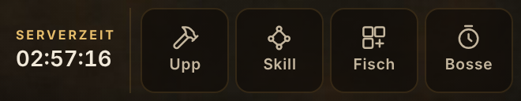
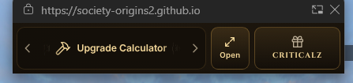
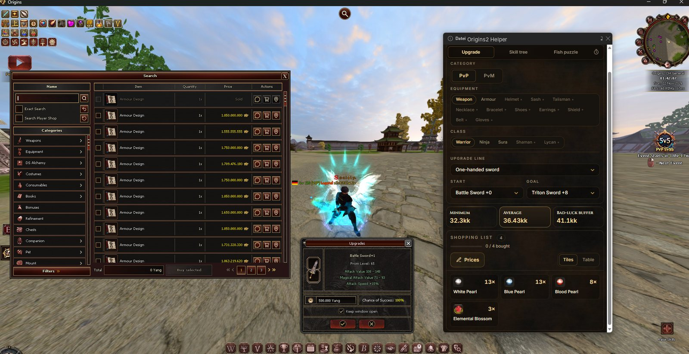
Uppen beim SchmiedUpgrading at the blacksmith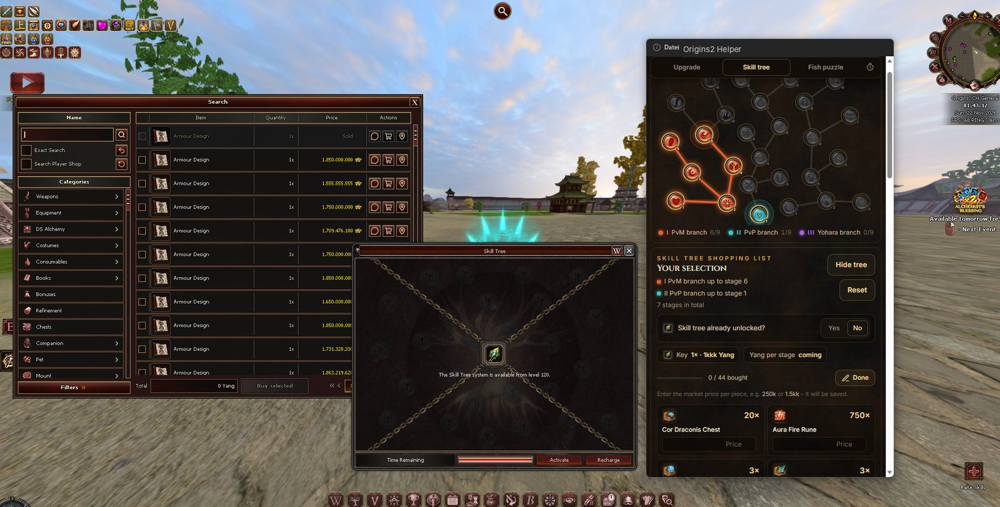
Skilltree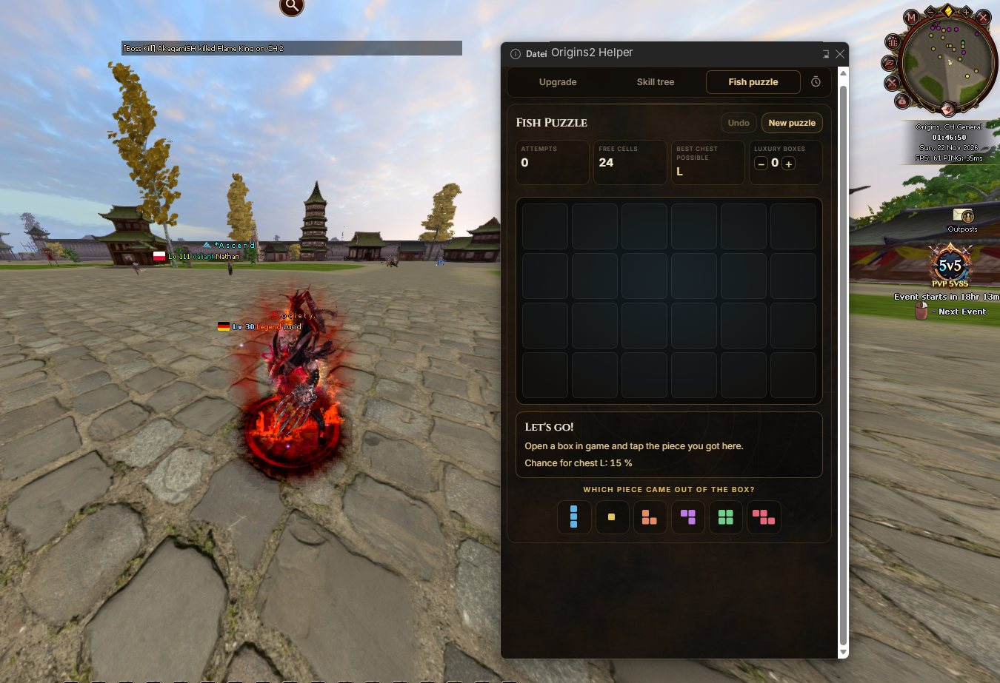
FischpuzzleFish puzzleSo funktioniert esHow it works
Keine Bots, keine Automatisierung, kein Auslesen des Clients. Man gibt selbst ein, was man im Spiel sieht.No bots, no automation, no reading of the client. You enter what you see in game yourself.
Auswahl, Preise und Haken bleiben im eigenen Browser. Der Besucherzähler arbeitet ohne Cookies.Selections, prices and ticks stay in your own browser. The visitor counter works without cookies.
Kein Abo, keine Werbung, keine Bezahlfunktionen – heute nicht und auch nicht später.No subscription, no ads, no paid features – not now and not later.
Stand & AusblickStatus & outlook
Der größte Aufwand ist dabei nicht der Code, sondern die Daten: Jede Tabelle wird heute aus Wiki-Screenshots von Hand übertragen.The biggest effort is not the code but the data: today every table is copied by hand from wiki screenshots.
ORIGINS2 HELPER by SocietyMitmachenGet involved
Mit den Wiki-Daten als Datei wären alle Werte vollständig, aktuell und frei von Abtippfehlern – für jede Klasse und jedes Item.With the wiki data as a file, every value would be complete, up to date and free of typing errors – for every class and every item.
Wir nutzen die Daten nur für den Helper und geben sie nicht weiter.We only use the data for the Helper and do not pass it on.
Jede Hilfe zählt, auch ohne Programmierkenntnisse.Every bit of help counts, no coding skills needed.
Ehrenamtlich gebaut von der Gilde Society – für alle Spieler auf Origins2.Built by volunteers from the guild Society – for every player on Origins2.